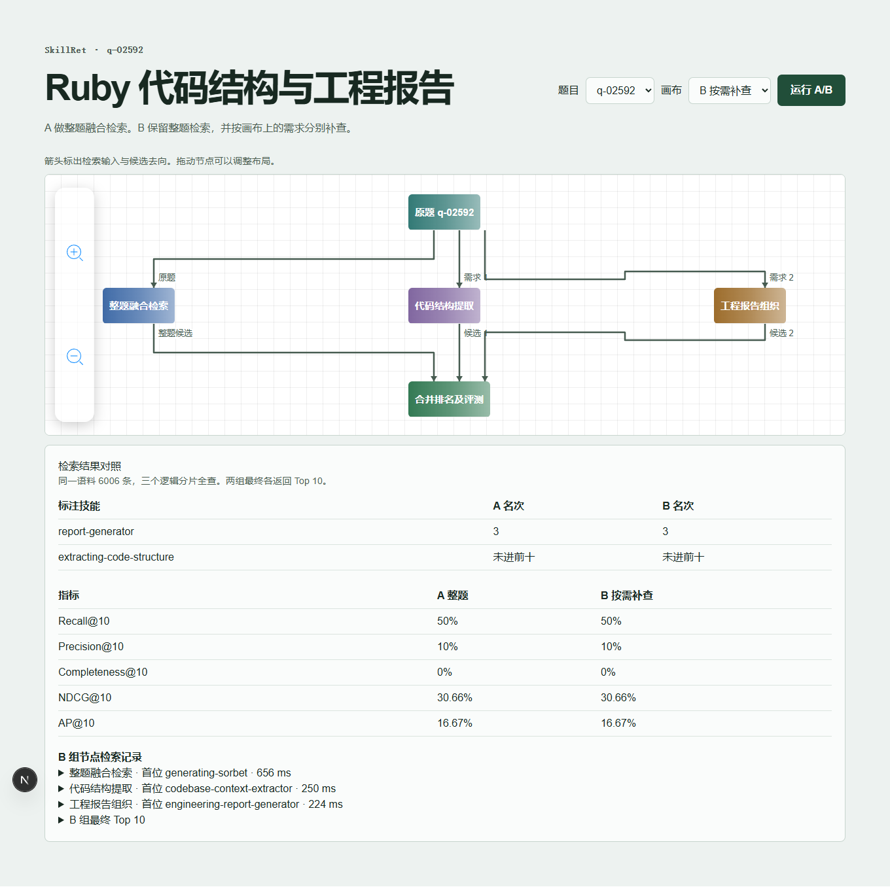

q-02592 Ruby 代码结构与工程报告
report-generator 在两组均排第 3。extracting-code-structure 未进入整题和两条分支的候选前十。
A/B 指标
| 指标 | A 整题 | B 按需求补查 |
|---|
| Recall@10 | 50.00% | 50.00% |
| Precision@10 | 10.00% | 10.00% |
| Completeness@10 | 0.00% | 0.00% |
| NDCG@10 | 30.66% | 30.66% |
| AP@10 | 16.67% | 16.67% |
数据集标注技能的名次
| 标注技能 | A | B |
|---|
| report-generator | 3 | 3 |
| extracting-code-structure | 未进前十 | 未进前十 |
原题与 B 组各节点
整题融合检索
Our Rails monorepo "HealthPulse" has about 30 service objects, 15 controllers, and a bunch of POROs scattered across `app/services/`, `app/controllers/`, and `lib/`. Before our quarterly engineering review next Tuesday, I need you to extract the full class/module hierarchy and public method signatures from every Ruby file under those three directories, then produce an HTML report with: (1) a summary table of each directory showing file count, total classes, total public methods, and average methods-per-class, (2) a bar chart comparing code complexity across the three directories, (3) a "API surface area" section listing every public method grouped by class with its signature, and (4) a short written analysis flagging any god-classes with more than 12 public methods or any files where the class count seems unusual. Format the whole thing so I can just open it in a browser and share the link with my engineering manager.
- generating-sorbet
- engineering-report-generator
- report-generator
- chart-generator
- ln-150-presentation-creator
- codebase-context-extractor
- reporting
- code-smell-detection
- advanced-file-management
- meta-library-dev
代码结构提取
Analyze a Ruby on Rails codebase by walking app/services, app/controllers and lib. Extract the full class and module hierarchy, namespace and inheritance relationships, and public method signatures by parsing Ruby source files. Preserve filenames, method parameters, and counts per directory.
- codebase-context-extractor
- generating-sorbet
- ruby-rails-application
- Rails Conventions
- ruby-stdlib
- csharp-project-expert
- rails-backend-guidelines
- use-sharpitect
- meta-library-dev
- bundler
工程报告组织
Produce a standalone HTML engineering report from a Ruby code analysis. Include directory summary tables of file, class and method counts, a bar chart, grouped API signatures, and a short review highlighting unusually large classes.
- engineering-report-generator
- report-generator
- generating-sorbet
- csv-data-visualizer
- chart-generator
- ruby-stdlib
- reporting
- simplifying-ruby-code
- ln-150-presentation-creator
- work-summary
最终候选
A Top 10
- generating-sorbet
- engineering-report-generator
- report-generator
- chart-generator
- ln-150-presentation-creator
- codebase-context-extractor
- reporting
- code-smell-detection
- advanced-file-management
- meta-library-dev
B Top 10
- generating-sorbet
- engineering-report-generator
- report-generator
- codebase-context-extractor
- ruby-rails-application
- csv-data-visualizer
- chart-generator
- ln-150-presentation-creator
- reporting
- code-smell-detection
RSI 实测截图
